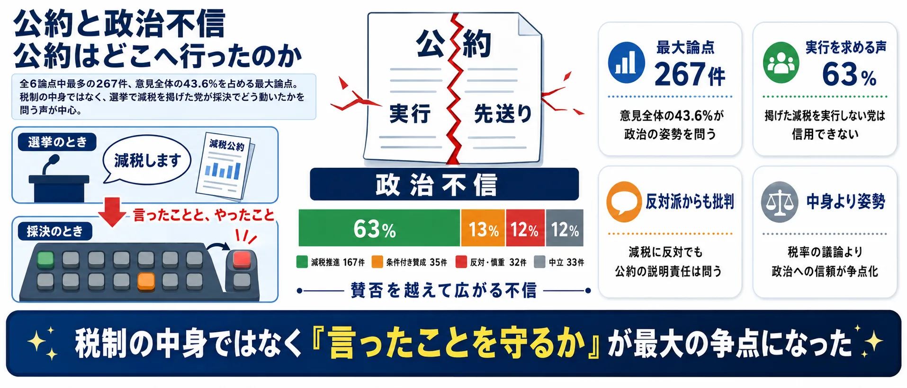
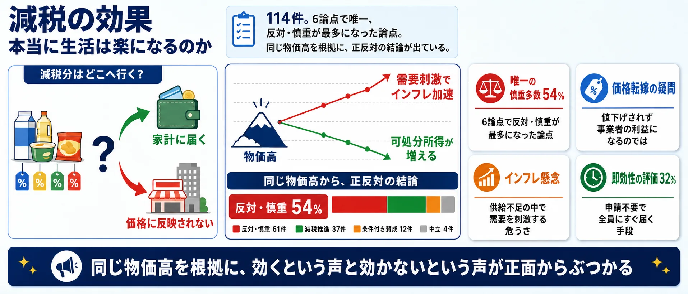
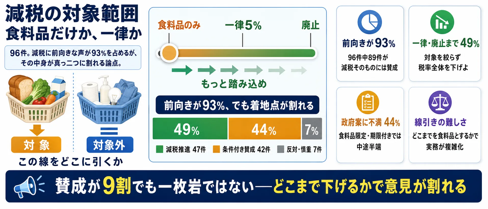
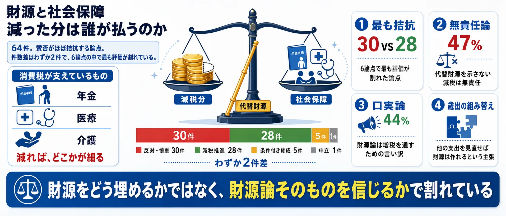
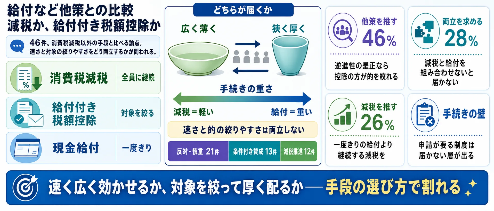
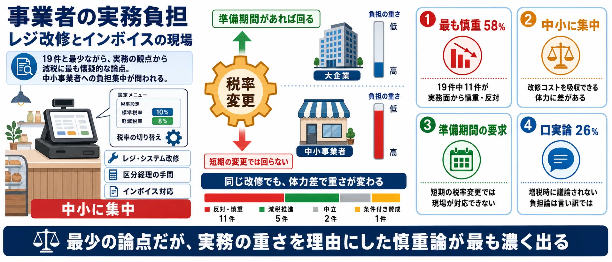

分析対象の意見
612件
対象範囲、財源、効果、公約を6論点で比較
食料品だけの減税で足りる？ 財源はどうする？
収集したSNS投稿667件のうち、分析対象となった意見612件をAIが6つの論点に整理しました。世論調査ではなく、SNS反応サンプルの論点比較です。
対象範囲、財源、効果、公約を6論点で比較
意見612件中299件
次点は減税の効果の114件
消費税減税の議論は「賛成か反対か」だけではありません。対象は食料品だけでいいのか、財源はどうするのか、そもそも生活に効くのか——6つの論点を図解で把握してから投票に進んでください。画像はタップで拡大できます。
公約・政治不信 — 公約はどこへ行ったのか267件
選挙で減税を掲げた政党が採決でどう動いたか、政権はどこまで踏み込むのか、財務省の影響力をどう見るか。税制の中身より政治の姿勢を問う声が集まる論点。

減税の効果 — 本当に生活は楽になるのか114件
減税分が価格に転嫁されず事業者の利益になる、需要を刺激してインフレを加速させる、という懐疑と、物価高の直撃を和らげる即効性を評価する声が対立する。

対象範囲 — 食料品だけか、一律か96件
政府案は食料品に対象を絞った限定的な減税。「中途半端」「一律5%か廃止まで踏み込め」という不満と、「まず実現することが先」という現実論がぶつかる論点。

財源・社会保障 — 減った分は誰が払うのか64件
消費税は社会保障の財源とされてきた。減税分を国債・歳出削減・別の増税のどれで埋めるのか、そもそも財源論は増税側の方便なのか、で評価が割れる。

給付との比較 — 減税か、給付付き税額控除か46件
給付付き税額控除・現金給付・所得税や住民税の減税など、他の手段と比べてどれが望ましいか。低所得層への効果と、実行までのスピードが論点になる。

事業者の負担 — レジ改修とインボイスの現場19件
税率を動かすたびに発生するレジ・システム改修、インボイス対応、税率変更のタイミング。現場の負担を理由にした慎重論と、それを言い訳とみる立場が対立する。

使い方: 6つの論点を図解で確認してから、次の投票で「自分が一番気になる論点」を選んでください。
2026年7月、物価高対策として食料品に対象を絞った消費税減税の議論が大詰めを迎えました。「限定的で中途半端」という不満、「財源と社会保障はどうするのか」という懸念、「そもそも値下げに反映されるのか」という疑問が同時に噴き出しています。
1あなたが最も気になる論点をタップ （全2問）
※ サイト参加者の集計であり、世論調査ではありません。回答と、24時間の重複防止用に一方向変換した接続元情報をサーバーに保存します。
※ 世論調査ではありません。
中心の「消費税減税」を7つの論点セクターが囲みます。扇の大きさは投稿数、中心からの距離は感情の熱量（外側ほど激しい）、点の色は立場（緑=減税推進 / 橙=条件付き賛成 / 赤=反対・慎重 / 灰=中立）。点をクリックすると元のXポストを開きます。

選挙で減税を掲げた政党が採決でどう動いたか、政権はどこまで踏み込むのか、財務省の影響力をどう見るか。税制の中身より政治の姿勢を問う声が集まる論点。
減税推進を支持の条件とする
@taFpUX4lmQREFwt の投稿をXで見る
減税への取り組みが遅く財源の説明がないと不満
@Andrew_jpn の投稿をXで見る
減税不支持だが公約遂行求め政治不信表明
@PleaseGnp の投稿をXで見る
一律5%公約から給付優先への転換に困惑
@j_kfp499265 の投稿をXで見る
減税分が価格に転嫁されず事業者の利益になる、需要を刺激してインフレを加速させる、という懐疑と、物価高の直撃を和らげる即効性を評価する声が対立する。
物価高対策と消費税減税を最優先として求める
@DXrUalvupnIEs2Z の投稿をXで見る
食料品減税は有効だが価格反映と財源の明示が必要
@gno_tb34585 の投稿をXで見る
消費税減税には反対。価格転嫁されず効果はないと主張
@takuyasan_0307 の投稿をXで見る
申請不要でその場に金が残る効果の出方に注目
@mattya の投稿をXで見る
政府案は食料品に対象を絞った限定的な減税。「中途半端」「一律5%か廃止まで踏み込め」という不満と、「まず実現することが先」という現実論がぶつかる論点。
消費税廃止を求め財源論より生活優先
@tncreator1 の投稿をXで見る
全品目の消費税減税を強く求める
@pinknolemon の投稿をXで見る
消費税引き下げに反対なので、食料品限定で済んで良い
@MIZUTAKI0520 の投稿をXで見る
消費税は社会保障の財源とされてきた。減税分を国債・歳出削減・別の増税のどれで埋めるのか、そもそも財源論は増税側の方便なのか、で評価が割れる。
消費税廃止で経済成長し税収減は自然増収で補えると主張
@HIIjujywBiCiHF2 の投稿をXで見る
高市減税への期待を示しつつ財源の具体性に疑問
@f_ganba の投稿をXで見る
減税には代替財源の明示がなければ詐欺と同じと主張
@19890430yoshi の投稿をXで見る
軍拡が社会保障と減税を圧迫する警告
@x21r5 の投稿をXで見る
給付付き税額控除・現金給付・所得税や住民税の減税など、他の手段と比べてどれが望ましいか。低所得層への効果と、実行までのスピードが論点になる。
配るなら取るなの減税支持論を擁護
@MisaPipiriko の投稿をXで見る
2年1%では弱く給付の方が良いと政府案に異論
@kurimariM の投稿をXで見る
消費税減税より社会保障費削減を優先したい
@4gVRQlUcsu81365 の投稿をXで見る
税率を動かすたびに発生するレジ・システム改修、インボイス対応、税率変更のタイミング。現場の負担を理由にした慎重論と、それを言い訳とみる立場が対立する。
レジ障害なら公費で買い替えを提案、即設定可能と主張
@onion_sword_ の投稿をXで見る
レジ理由で減税断念なら今後一切増税を許さず
@koto_cat_ の投稿をXで見る
レジ改修や区分けの実務問題を指摘
@Knives1842 の投稿をXで見る
減税の有無に関わらずレジ改修を早急に進めるべき
@muuk2022myabi の投稿をXで見る
消費税は税率10%（食料品などは軽減税率8%）で、社会保障の主要財源とされてきました。物価高が続くなかで各党が減税を掲げ、2026年7月には食料品に対象を絞った減税をめぐる調整が大詰めを迎えています。対象範囲・税率・実施時期・恒久化の有無が、いずれも決着の焦点になっています。
推進する立場からは「物価高対策として最も早く広く効く」「可処分所得が直接増える」という主張があります。慎重な立場からは「社会保障の財源が細る」「値下げに反映されず事業者の利益になる」「供給が追いつかないなかで需要を刺激すればインフレが加速する」という反論が出ています。
SNS上では減税に前向きな声が多数ですが、その中身は一枚岩ではありません。「一律・恒久でなければ意味がない」という不満、「財源を示さない減税は無責任」という批判、「公約を掲げた政党が採決でどう動いたか」という政治不信が、論点ごとに別々の対立軸をつくっています。
意見612件の内訳は、減税推進299件・条件付き賛成109件・反対・慎重163件・中立41件。
減税推進と条件付き賛成を合わせると408件。反対・慎重は163件で、前向きな声が多数を占めます。ただし前向きの中身は一律派と限定容認派に割れています。
公約・政治不信が267件で最多。次いで減税の効果114件、対象範囲96件と続きます。
| 公約と政治不信 | 267 |
|---|---|
| 減税の効果 | 114 |
| 減税の対象範囲 | 96 |
| 財源と社会保障 | 64 |
| 給付など他策との比較 | 46 |
| 事業者の実務負担 | 19 |
| その他 | 6 |
| 減税推進 | 299 |
|---|---|
| 条件付き賛成・政府案に不満 | 109 |
| 減税反対・慎重 | 163 |
| 中立・情報 | 41 |
| high | 266 |
|---|---|
| medium | 306 |
| low | 40 |
| 選んだ論点 | マーカーが置かれるセクター | マーカーの色 |
|---|---|---|
| 公約・政治不信 | 公約・政治不信 | 選んだ立場の色 |
| 減税の効果 | 減税の効果 | |
| 対象範囲 | 対象範囲 | |
| 財源・社会保障 | 財源・社会保障 | |
| 給付との比較 | 給付との比較 | |
| 事業者の負担 | 事業者の負担 | |
| その他 | その他 |